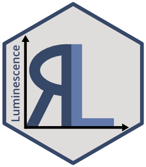

| Luminescence-package {Luminescence} | R Documentation |

R Luminescence Developer Team
A collection of various R functions for the purpose of luminescence dating data analysis. This includes, amongst others, data import, export, application of age models, curve deconvolution, sequence analysis and plotting of equivalent dose distributions.
Supervisor of the initial version in 2012
Markus Fuchs, Justus-Liebig-University Giessen, Germany
Support contact
Bug reporting
Project website
Project source code repository
Related package projects
Package maintainer
Sebastian Kreutzer, Geography & Earth Sciences, Aberystwyth University (United Kingdom),
sebastian.kreutzer@aber.ac.uk
Funding
Cooperation and personal exchange between the developers is gratefully funded by the DFG (SCHM 3051/3-1) in the framework of the program "Scientific Networks". Project title: "RLum.Network: Ein Wissenschaftsnetzwerk zur Analyse von Lumineszenzdaten mit R" (2014-2018)
Between 2014–2019, the work of Sebastian Kreutzer as maintainer of the package was supported by LabEx LaScArBxSK (ANR - n. ANR-10-LABX-52).
Between 2020–2021, the work of Sebastian Kreutzer as maintainer of the package has received funding from the European Union’s Horizon 2020 research and innovation programme under the Marie Skłodowska-Curie grant agreement No 844457 (CREDit).
Dietze, M., Kreutzer, S., Fuchs, M.C., Burow, C., Fischer, M., Schmidt, C., 2013. A practical guide to the R package Luminescence. Ancient TL, 31 (1), 11-18.
Dietze, M., Kreutzer, S., Burow, C., Fuchs, M.C., Fischer, M., Schmidt, C., 2016. The abanico plot: visualising chronometric data with individual standard errors. Quaternary Geochronology 31, 1-7. https://doi.org/10.1016/j.quageo.2015.09.003
Fuchs, M.C., Kreutzer, S., Burow, C., Dietze, M., Fischer, M., Schmidt, C., Fuchs, M., 2015. Data processing in luminescence dating analysis: An exemplary workflow using the R package 'Luminescence'. Quaternary International, 362,8-13. https://doi.org/10.1016/j.quaint.2014.06.034
Kreutzer, S., Schmidt, C., Fuchs, M.C., Dietze, M., Fischer, M., Fuchs, M., 2012. Introducing an R package for luminescence dating analysis. Ancient TL, 30 (1), 1-8.
Mercier, N., Kreutzer, S., Christophe, C., Guérin, G., Guibert, P., Lahaye, C., Lanos, P., Philippe, A., Tribolo, C., 2016. Bayesian statistics in luminescence dating: The ’baSAR’-model and its implementation in the R package ’Luminescence’. Ancient TL 34 (2), 14-21.
Smedley, R.K., 2015. A new R function for the Internal External Uncertainty (IEU) model. Ancient TL, 33 (1), 16-21.
King, E.G., Burow, C., Roberts, H., Pearce, N.J.G., 2018. Age determination using feldspar: evaluating fading-correction model performance. Radiation Measurements 119, 58-73. https://doi.org/10.1016/j.radmeas.2018.07.013